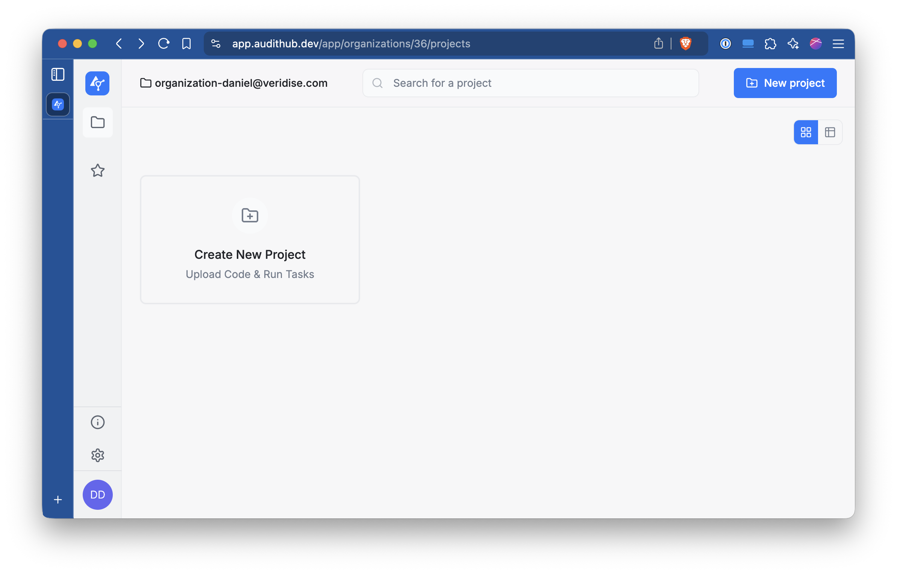
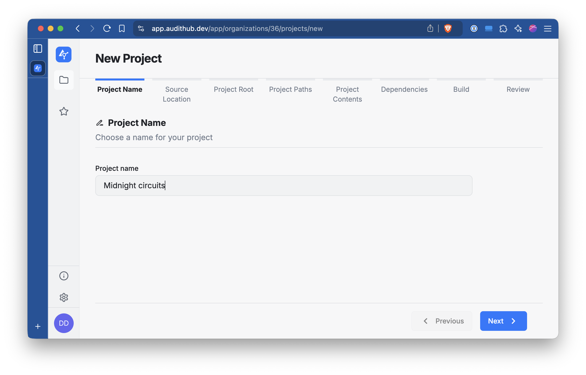
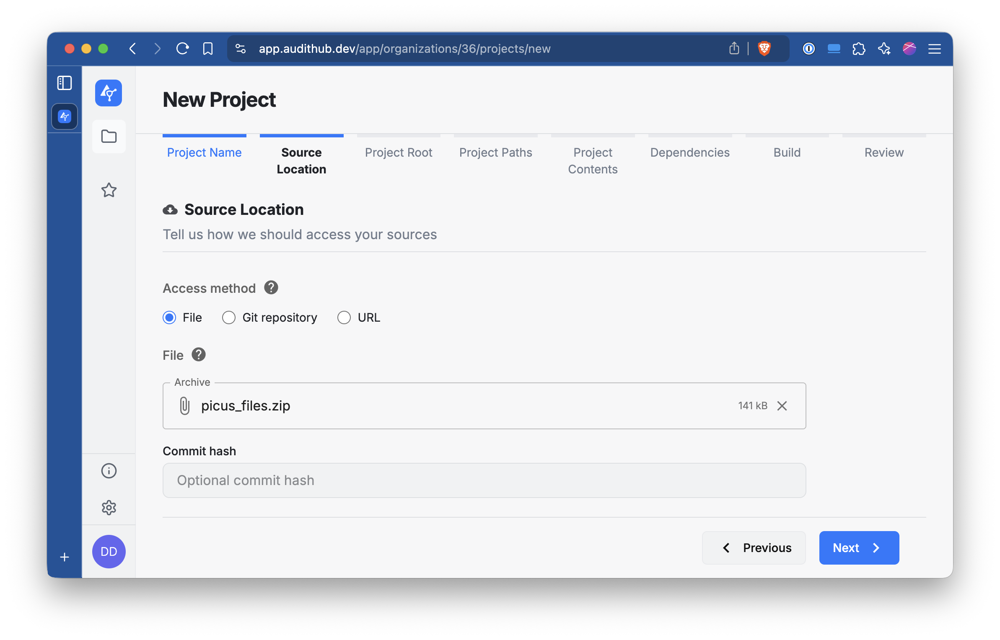
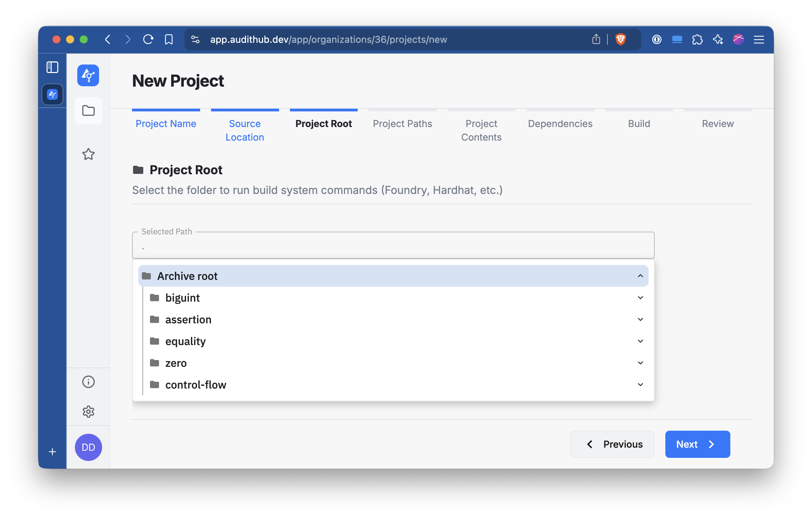
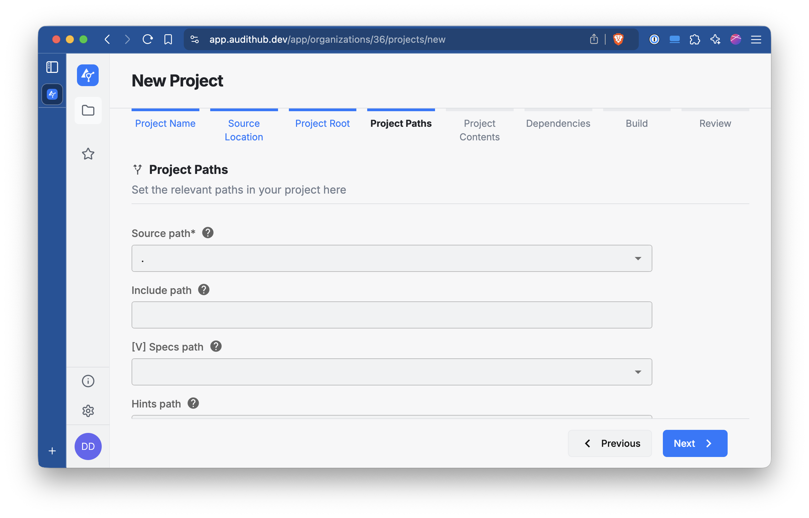
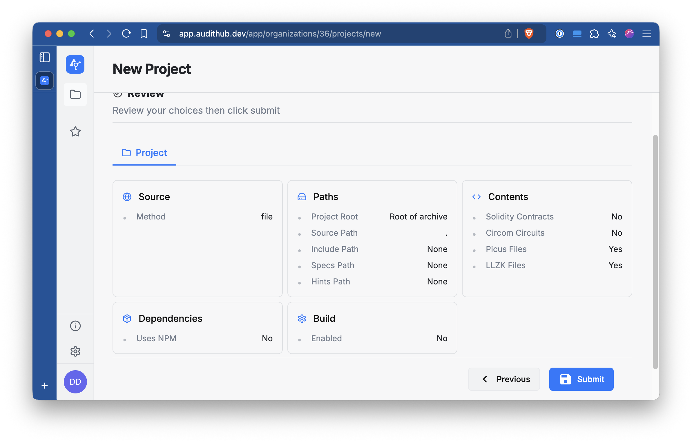

Installation
The extraction tool needs to be built from source. This is because the harness definitions depend on
the circuits crate in midnight-zk.
TODO: How to obtain the source distro.
Once inside of the directory where the source is located you can build and run the tool.
First, verify that the version of midnight-circuits that the tool is linked against
is the version you are interesting in extracting from.
Check that the dependency is pointing to the right repository and the right revision.
Also make sure that it has the extraction feature enabled. Without this feature the
circuits do not include the necessary integrations.
For example:
$ cargo info midnight-circuits
midnight-circuits
version: 5.0.1 (from https://github.com/Veridise/midnight-zk#0d63a4d4)
license: unknown
rust-version: unknown
features:
+default = []
bench-internal = [midnight-proofs/bench-internal]
extraction = [extractor-support, testing, midnight-proofs/extraction, picus/extractor-derive]
extractor-support = [dep:extractor-support]
heap_profiling = []
serde = [dep:serde]
serde_derive = [dep:serde_derive]
serde_json = [dep:serde_json]
testing = [num-bigint/rand]
truncated-challenges = [midnight-proofs/truncated-challenges]
Once everything looks good you can build the tool as usual with cargo build --release.
Extraction
Once the tool is build you can use the midnight-extractor CLI to extract the circuits.
Quickstart
To extract all the circuits you can use the extract-all.sh script located in the scripts directory.
The Picus representation of the extracted circuits can be found in the picus_files directory.
By default this tool does not extract the LLZK versions.
CLI usage
The midnight-extractor CLI builds a list of extractable circuits at runtime then extracts them to the desired format.
The CLI has a series of flags and arguments that allows controlling the selection of circuits to extract. The CLI also has
flags for controlling the output produced by the tool.
Use the --help flag to see the full list of options.
Circuit selection
Each circuit has 4 properties that are used for filtering and selection; instruction, chip, type, and name.
The instruction groups together circuits that are related and in general corresponds to an instruction-like trait
(i.e. arithmetic corresponds to ArithInstructions or ecc to EccInstructions). The instructions are selected as
positional arguments. Adding instructions to the CLI invocation creates a set of selected instructions. If no
instructions are passed to the CLI then all instructions are considered.
Possible instruction values: arithmetic, assertion, assignment, automaton, base64, base64-var, biguint, binary, bitwise, canonicity, committed-instance, comparison, control-flow, conversion, core-decomposition, decomposition, division, ecc, equality, field, foreign-ecc, hash, hash-to-curve, map, map-to-curve, parser, pow2-range, public-input, range-check, sha256, sponge, stdlib, unsafe-conversion, varhash, vector, zero.
The chip declares what concrete implementation of the instruction is used by the circuit. Different chips
implement the same instruction traits and this parameter allows configuring what chip is going to be targeted.
To select a chip use the --chip <name> flag. This will make the tool filter out any circuit that is not implemented
by the chip. If the flag is not passed then the tool will consider all chips.
Possible chip values: native, native-gadget, field, poseidon, pow2-range, p2r-decomposition, sha256, ecc, foreign-ecc-native, foreign-ecc-field, vector, biguint, stdlib, automaton, base64, hash-to-curve, map, parser, varlen-poseidon, varlen-sha256.
The type declares what high-level type the circuit is using and can be selected with the --type <name> flag.
Similarly to --chip, not passing this flag makes the tool consider all types. The circuits distinguish by type
because some circuits implement the same instructions for multiple. For example, the native chip implements
the equality instructions for the native and bit types.
Possible type values: native, bit, field, byte, biguint, scalar, point.
The name describes the functionality the circuit is trying to represent. In general corresponds to methods in
one of the instruction-like traits. Some methods have a variable number of arguments. In cases like that
then multiple circuits may be created with different combinations of arguments and the name will contain information
about the combination (i.e. the circuits hash/hash_1/sha256/byte and hash/hash_10/sha256/byte operate on 1 and 10
input values respectively).
You can filter by name with both a whitelist and a blacklist. If the whitelist is passed,
any circuit outside of the list is discarded. And, if the blacklist is passed, then any circuit inside it is discarded.
If the whitelist or the blacklist are not set then they have no effect and all circuit names will be included in the
extraction. Both lists can be configured as a comma separated list passed as arguments to the --method-whitelist and
--method-blacklist flags.
You can combine these flags in any way you want. You can also pass the --list flag to the tool makes it print the
selected circuits instead of extracting them. This is useful for debugging a circuit selection that is not producing the
desired results.
Constants
Some harnesses require a list of literal values that will be used as compile-time constants representing
off-circuit values in the harness’ input. To pass constants use either --constants or --constants-file.
The former expects a comma separated list of literal values. All types expect their decimal representation with the
exception of bit with expectes either true or false. The latter expects a path to a file containing lines
of comma separated values. These values have the same requirements as the --constants flag.
If a harness requires more constants than supplied extraction will fail.
Output directory structure
The output directory can be selected with the -o flag and if the flag is omitted picus_files is used as a default.
The tool writes into this directory one Picus file per extracted harness. These files are organized hierarchically
by instruction, name, chip, and type. For example the harnesses for equality in the native chip will produce
the following structure.
└── picus_files
└── equality
├── is_equal_to
│ └── native
│ ├── bit
│ │ └── output.picus
│ └── native
│ └── output.picus
└── is_equal_to_fixed
└── native
├── bit
│ └── output.picus
└── native
└── output.picus
AuditHub
AuditHub is a Veridise service where users can run verification tools such as Picus. Is accesible via both its web interface and CLI. In this document we will explain how to prepare a project for AuditHub, how to configure the CLI, and how to use it for interacting with AuditHub.
AuditHub CLI
The CLI is a Python 3 program that can be installed with pip (pip install audithub-client).
The CLI needs to be configured before using it. For that go to Account Settings / API Keys in AuditHub’s UI. Store the given client id and client secret somewhere secure depending on the intended usage of the keys.

For using the keys locally it could be a .envrc file
managed by direnv. For using them in CI that could be Github Secrets accesible
by Github Actions.
Once the keys are ready check the CLI’s documentation on how to configure you system such that the CLI can use them to connect to AuditHub.
You can confirm that the CLI is working correctly by running the following
$ ah get-my-profile
{"id": "...", "name": "<Your name>", "email": "<Your email>", "rights": [...], ...}
Creating a new project
Before being able to upload new versions to AuditHub and launch jobs from the CLI it is necessary to create a project from the UI.
For the first version of the project generate at least some Picus files with midnight-extractor and pack them into a ZIP file.
# For example, generate some Picus files for the equality instructions
cargo run --release -- --chip native --type native equality
zip -r picus_files.zip picus_files
Then go to AuditHub’s UI and into the organization where you want to create the project and click in Create New Project

Given a name to the project and click Next.

Select the File option and locate the ZIP file prepared earlier. Once you have it click Next.

Select Archive root and click Next.

In this section, leave this options as they are and click Next.

Select Picus files (and optionally LLZK files) and click Next.

Leave the next two sections untouched and just click Next.


Check that everything looks right and click Submit.

Once the project has been created you will be able to access its main view. For interacting with this
project from the CLI you need to pass the organization and project IDs. Note in the part of the URL
organizations/<number>/projects/<number>. The first is the organization ID and the second the project ID.

These IDs can be configured as environment variables and the CLI will use them while executing.
export AUDITHUB_ORGANIZATION_ID=<organization id>
export AUDITHUB_PROJECT_ID=<project id>
Uploading new versions
TBD
Launching jobs
TBD
Writing new harnesses
Adding more harnesses is done in the crates/harnesses crate. The crate is organized by instructions and,
in some cases, by chips or gadgets that implement the instructions.
Conceptually, a harness is a function that receives a chip, a layouter, some inputs and returns a Result.
In reallity a harness is a function with a more abstract signature but that complexity is usually managed by a macro
that allows for a more declarative approach. However, if the macro is not an option see the section below
on how to write harnesses from scratch.
Writing declarative harnesses
A harnesses written declaratively has the following structure.
#![allow(unused)]
fn main() {
// The harnesses are NOT parametrized by a field.
use mdnt_extractor_core::fields::Blstrs as F;
// Sets the harness name of the function below.
#[entry("control-flow/select/native/native")]
// Marks the function as a harness
#[harness]
pub fn select_native(
// The first argument is the chip. The only requirement is that the type is a &-reference.
chip: &NativeChip<F>,
// The second argument is the layouter. The actual layouter variable is not a
// `impl Layouter<F>`. This is syntactic sugar for a namesake variable that
// implements `midnight_proofs::circuit::Layouter`. So the result is the same.
layouter: &mut impl Layouter<F>,
// The third argument are the inputs. The type of the input must implement `LoadFromCells`.
(cond, a, b): (AssignedBit<F>, AssignedNative<F>, AssignedNative<F>),
// Optional fourth argument that allows injecting additional IR for aiding verification.
injected_ir: &mut InjectedIR<RegionIndex, Expression<F>>
// The output must be a Result<T, E> where T is a type that implements `StoreIntoCells` and
// E is `midnight_proofs::plonk::Error`.
) -> Result<AssignedNative<F>, Error> {
// Runs the target method.
chip.select(layouter, &cond, &a, &b)
}
}And that’s it. The list of harnesses is defined automatically at compile time and
can be obtained by calling the mdnt_harnesses::harnesses function.
The extractor uses that function for selecting what harnesses need to be extracted.
The macros do a lot of heavy lifting in converting this form to how the harnesses look internally.
The #[entry("...")] macro registers the function in the list of harnesses. This registration is accomplised
with mdnt_extractor_core::entry! and in some cases is actually better to use this macro instead of #[entry].
For example, a harness that is parametrized by a constant parameter for selecting the size of some arrays.
#![allow(unused)]
fn main() {
entry!("bar/example_10/foo/native", example::<10>);
entry!("bar/example_20/foo/native", example::<20>);
#[harness]
pub fn example<const N: usize>(
chip: &FooChip<F>,
layouter: &mut impl Layouter<F>,
arr: [AssignedNative<F>; N]
) -> Result<AssignedNative<F>, Error> {
chip.foo(layouter, &arr)
}
}The harness macro family has 6 macros that can be used for declaring harnesses and offer some flexibility for covering most cases.
For most chips (the ones where ChipArgs::Args == ()) use the macros harness, harness_mut, and unit_harness. The
first macro is the one we saw above already. harness_mut is similar to harness but the first argument (the chip argument)
must be a &mut-reference instead. unit_harness is for methods that do have a return value (Result<(),Error>). For this
macro split the inputs of the function into two sets and pass them as the 3rd and 4th argument. The 4th argument can be
considered the output and additional constraints can be injected for aiding Picus with verification. That argument, however,
is not encoded as a Picus output. Is just a separation for readability. In these cases a vacuous output is generated
that is constrained to be equal to 0.
If for the target chip ChipArgs::Args != () then you need to use harness_with_args, harness_with_args_mut, and
unit_harness_with_args. These macros work identically to their counterparts but require declaring the type of
ChipArgs::Args (i.e. #[harness_with_args(usize)]). For providing the argument you need to define a function that has
the same name as the harness function followed by _args (i.e. foo would be foo_args). That function cannot take any
arguments and return a value of the declared type.
Since the most common argument type is usize we include a convenience macro #[usize_args(<usize>)] that automatically creates
the function with the correct name and returns the value passed as argument to the macro.
All the macros accept an optional argument with an expression containing LookupCallbacks. For example, for extracting a
harness like the first one but for NativeGadget instead we need to handle the range lookup that gadget uses. For that we can
do as follows:
#![allow(unused)]
fn main() {
#[entry("control-flow/select/native-gadget/native")]
// The range_lookup function creates the appropiate handler for the lookup.
#[harness(range_lookup(8))]
pub fn select_native(
chip: &NG<F>,
layouter: &mut impl Layouter<F>,
(cond, a, b): (AssignedBit<F>, AssignedNative<F>, AssignedNative<F>),
) -> Result<AssignedNative<F>, Error> {
chip.select(layouter, &cond, &a, &b)
}
}Writing harnesses from scratch (WIP)
If the macros shown above don’t fit the needs of this new harness they can still be defined by hand. Below is an annotated version of the kind of code the macros generate that can serve as a starting point for creating a harness from scratch.
#![allow(unused)]
fn main() {
entry!("control-flow/select/native-gadget/native", select_native);
fn select_native(ctx: &Ctx) -> anyhow::Result<Output> {
// The actual logic of the harness needs to be wrapped into a trait.
// So we need to create a type for that.
struct Circuit<'s, 'c>(PhantomData<(&'s (), &'c ())>);
// This trait defines the types that the harness uses.
// The extractor will rely on this trait for finding the right types for
// creating the right final circuit.
impl<'s, 'c> AbstractCircuitIO for Circuit<'s, 'c> {
// The chip type. It must implement CircuitInitialization but is not enforced.
type Chip = NativeChip<F>;
// The type of the inputs. Must implement `LoadFromCells` and if the method takes several
// they can be grouped in tuples up to 12 elements.
type Input = (AssignedBit<F>, AssignedNative<F>, AssignedNative<F>);
// The type of the outputs. Same as the inputs but must implement the
// `StoreIntoCells` trait instead.
type Output = AssignedNative<F>;
// These two types need to be the same as their namesakes in CircuitInitialization.
type Config = <NativeChip<F> as CircuitInitialization<ExtractionLayouter<'s, 'c, F>>>::Config;
type ConfigCols =
<NativeChip<F> as CircuitInitialization<ExtractionLayouter<'s, 'c, F>>>::ConfigCols;
}
// The actual logic is defined with this trait.
// `harness_mut` will use `AbstractCircuitMut`
impl AbstractCircuit<F> for Circuit<'_, '_> {
fn synthesize<L>(
&self,
chip: &Self::Chip,
layouter: &mut L,
(cond, a, b): Self::Input,
_: &mut InjectedIR<
RegionIndex,
Expression<F>,
>,
) -> anyhow::Result<Self::Output, Error>
where
L: Layouter<F>,
{
chip.select(layouter, &cond, &a, &b)
}
}
// If the chip arguments is () then this trait can be used.
impl NoChipArgs for Circuit<'_, '_> {}
// The type we created and implemented the types for can be passed to this
// type. This type handles the linking between the inputs, outputs, and the harness logic.
let ci: CircuitImpl<'_, F, Circuit, Function> =
CircuitImpl::new(ctx, Circuit(Default::default()));
// The first argument of this method is a type that implements the
// CircuitSynthesis trait, which is Haloumi's counterpart to the Circuit trait in Halo2.
// As long as the value passed there meets the interface all the stuff above this line is not
// mandatory.
// The second argument is an optional dyn reference to a LookupCallbacks implementation.
// These callbacks are invoked when the circuit has lookups for getting the IR that needs to be
// generated for handling the lookup.
ctx.lower_circuit(ci, None)
}
}Supporting new chips
TBD
Supporting new assigned types
TBD